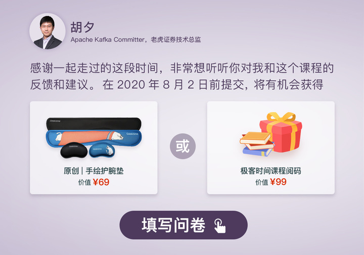

- 00 导读 构建Kafka工程和源码阅读环境、Scala语言热身.md
- 00 开篇词 阅读源码，逐渐成了职业进阶道路上的“必选项”.md
- 00 重磅加餐 带你快速入门Scala语言.md
- 01 日志段：保存消息文件的对象是怎么实现的？.md
- 02 日志（上）：日志究竟是如何加载日志段的？.md
- 03 日志（下）：彻底搞懂Log对象的常见操作.md
- 04 索引（上）：改进的二分查找算法在Kafka索引的应用.md
- 05 索引（下）：位移索引和时间戳索引的区别是什么？.md
- 06 请求通道：如何实现Kafka请求队列？.md
- 07 SocketServer（上）：Kafka到底是怎么应用NIO实现网络通信的？.md
- 08 SocketServer（中）：请求还要区分优先级？.md
- 09 SocketServer（下）：请求处理全流程源码分析.md
- 10 KafkaApis：Kafka最重要的源码入口，没有之一.md
- 11 Controller元数据：Controller都保存有哪些东西？有几种状态？.md
- 12 ControllerChannelManager：Controller如何管理请求发送？.md
- 13 ControllerEventManager：变身单线程后的Controller如何处理事件？.md
- 14 Controller选举是怎么实现的？.md
- 15 如何理解Controller在Kafka集群中的作用？.md
- 16 TopicDeletionManager： Topic是怎么被删除的？.md
- 17 ReplicaStateMachine：揭秘副本状态机实现原理.md
- 18 PartitionStateMachine：分区状态转换如何实现？.md
- 19 TimingWheel：探究Kafka定时器背后的高效时间轮算法.md
- 20 DelayedOperation：Broker是怎么延时处理请求的？.md
- 21 AbstractFetcherThread：拉取消息分几步？.md
- 22 ReplicaFetcherThread：Follower如何拉取Leader消息？.md
- 23 ReplicaManager（上）：必须要掌握的副本管理类定义和核心字段.md
- 24 ReplicaManager（中）：副本管理器是如何读写副本的？.md
- 25 ReplicaManager（下）：副本管理器是如何管理副本的？.md
- 26 MetadataCache：Broker是怎么异步更新元数据缓存的？.md
- 27 消费者组元数据（上）：消费者组都有哪些元数据？.md
- 28 消费者组元数据（下）：Kafka如何管理这些元数据？.md
- 29 GroupMetadataManager：组元数据管理器是个什么东西？.md
- 30 GroupMetadataManager：位移主题保存的只是位移吗？.md
- 31 GroupMetadataManager：查询位移时，不用读取位移主题？.md
- 32 GroupCoordinator：在Rebalance中，Coordinator如何处理成员入组？.md
- 33 GroupCoordinator：在Rebalance中，如何进行组同步？.md
- 特别放送（一）经典的Kafka学习资料有哪些？.md
- 特别放送（三）我是怎么度过日常一天的？.md
- 特别放送（二）一篇文章带你了解参与开源社区的全部流程.md
- 特别放送（五） Kafka 社区的重磅功能：移除 ZooKeeper 依赖.md
- 特别放送（四）20道经典的Kafka面试题详解.md
- 结束语 源码学习，我们才刚上路呢.md
结束语 源码学习，我们才刚上路呢
你好，我是胡夕。《Kafka核心源码解读》课到今天就告一段落了，又到了和你说再见的时候。
当初接下这个任务时，我记得小编和我说，咱们这个课程将会是极客时间的第一个源码类的专栏课，我顿时觉得既自豪又忐忑。
自豪的是，我能够作为首个源码专栏课作者，给你分享Kafka源码的学习心得；忐忑的是，源码并不好讲，如果讲解的粒度太粗，就会流于表面，不够深入，而粒度太细的话，就很容易陷入流水账似的代码走读，这其中的度，需要仔细拿捏才行。
不过，我依然还是愿意试一试。
因为我始终觉得，现在的编程教育对于阅读源码的重视程度远远不足。一直以来，学校或各类培训机构只看重编程技能的灌输，而忽略了带领大家一同学习业界流行框架的源码编写方法，但这恰恰是非常关键的。如果你没有阅读过大量质量上乘的代码，那么，你就不可能写出优秀的代码。
就像美国作家斯蒂芬·金所说：“If you don’t have time to read, you don’t have the time (or the tools) to write. Simple as that.” 虽然这句话是关于写作的，但是对于我们写代码来说，同样也是适用的。学习比自己更有经验的人写出的源码，一定会直接或间接地影响你自己的编码水平。
我曾在[开篇词]中提到过阅读源码的3个好处，但实际上，对于一个每天都要写代码的程序员来说，我们阅读源码的最大目的，就是能够写出更好的代码。这么多年阅读Kafka源码的经历，让我对此深有体会，因此，我很想把我的阅读经验整理出来，分享给你，尽可能帮你更加科学高效地阅读源码，从而写出更好的代码。
从2019年12月开始筹备这门课，到今天交付完成，共经历了近八个月的时间，我精心挑选并讲解了Kafka Broker端主要组件的核心源码。我个人觉得，总体上还是成功的。有很多模块的源码分析，我自己在写的时候都收获良多。因此，我在想，如果你认真地学完了前面的内容，应该也是有些收获的。
当然，无论你眼下掌握了多少，这些在过去更新的知识就停留在过去了，等着你时时去翻阅，去消化，去借助它们解决现在以及未来的问题。此刻，我们就要暂时跟它们说再见了，我想再和你聊一聊未来的事情，未来学习源码的事情。
课程结束后，你应该如何继续你的Kafka源码阅读计划呢？我根据自己的经验，再给你分享一些建议。
首先，我建议你研读一下Kafka Clients端的代码。
你可能会问，难道不是应该先阅读Broker端其他组件的代码吗，为什么要读Clients端的代码？实际上，Clients工程包含的已经不仅仅是客户端的源码了，它还包含了各类支撑服务器端组件的基础代码，比如通信通道、消息集合，等等。了解它们的实现，可以补齐你对Kafka代码框架的整体认知。通读并搞懂Clients和Core工程下的代码，是精通Kafka实现原理的必要步骤。
其次，把课程中涉及到组件的测试用例代码学习一遍，最好是打上断点，边运行边Debug。很多时候，光看组件实现源码，还是会很难理解它真正运行起来是什么样的，而测试用例就能够很好地带领我们一探究竟。
我举个真实的例子。当初，我自己学习Log Cleaner源码时，就非常吃力。我把LogCleaner类看了很多遍，却始终不得要领。后来，我突然想到，不是有个LogCleanerTest吗？于是，我就翻开里面的各种test×××方法，挨个儿琢磨，终于明白了这个组件实际的工作原理。因此，我想特别提醒你一句，千万不要忽视测试用例代码的威力。
最后，你一定要读一读Log Cleaner组件的代码。
它主要用于完成带Key消息的日志清理，在其他场合的出镜机会不多，所以我并没有专门在课程里讲它，但是，它其实也是Broker端非常重要的组件。
我们熟知的位移主题，就是依靠这个机制，定期删除过期位移消息和过期注册消息的。事实上，清除过期数据或重复数据，是任何一个数据存储系统都要解决的关键课题。这个组件的代码量不多，你可以在很短的时间内掌握它。
Okay，现在阅读的方向有了，但你依然可能会遇到一个难题，那就是，看不懂怎么办？
虽然我给出了一些源码阅读方法，但是，毕竟，理解别人写的代码是一件很有挑战的事情，因此，我的答案是：“别着急！”
刚开始时，你可能压根不知道某个方法或类的代码是做什么的，这是非常正常的现象。这个时候，你要做的，就是初步了解一下代码结构和轮廓，知道有哪些类，类中定义了哪些API。这就像学习写作一样，努力搞懂一些知识范畴之外的代码，就可以扩大你的代码功力的外延。如果一直徜徉在简单、枯燥、易理解的代码海洋中，就很难真正地有所进步。
同时，你也不要幻想，代码只读一遍就可以了！阅读源码这件事，一定要重复很多次之后，才会有“质”的变化。
不知道你是否听说过“洋葱源码阅读法”，它指的是，我们读源码，就要像剥洋葱一样，第一遍的阅读仅仅是获取整体项目结构和概要，接下来的多遍阅读，才会逐步揭开代码的本质。切记：每次只剥一层。
除此之外，如果说我还有什么私藏的方法，那就是亲自动手去修改源码。
实际上，只有你对阅读的代码进行了一些改进或变更，才能真正地体会到阅读源码的快乐。因此，在阅读Kafka或其他框架的源码时，你不妨亲自动手改一改代码，做一些实验Debug一下，去体会一下你所做的改动给Kafka带来的变化。相信我，你会爱上这个过程的。
最后，我还想说的一点是，不要恐惧。阻碍很多人阅读源码的第一大原因就是恐惧。一想到有那么多行代码要读，就本能地竖起了放弃的大旗。其实，再宏大的框架，也是一行行代码堆砌起来的。我一直秉承着一句七字箴言：你敢写我就敢读！现在我把它送给你，希望在你想要放弃的时候，把它拿出来，鼓励一下自己。
好了，这一季的课程就到这里结束吧。今天没有太多华丽的表达，全部都是一些朴实的建议。其实，所有的一切，我其实都只是想说，源码学习，我们才刚刚上路。
阅读源码仿佛一场漫长的登山之旅，半山腰很挤，我们山顶上见。
我给你准备了一份结课问卷，希望你能在问卷里聊一聊你对这门课的看法。欢迎你点击下面的图片，用1～2分钟时间填写问卷，期待你畅所欲言。

](https://jinshuju.net/f/a88osf)© 2019 - 2023 Liangliang Lee. Powered by gin and hexo-theme-book.